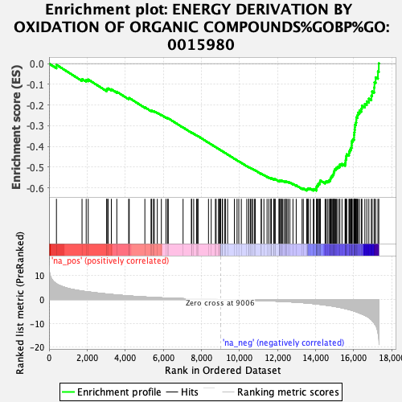
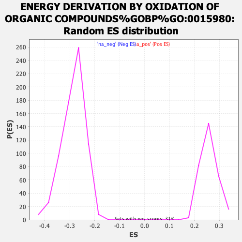

| | | Dataset | ranked_mn_list |
| Phenotype | NoPhenotypeAvailable |
| Upregulated in class | na_neg |
| GeneSet | ENERGY DERIVATION BY OXIDATION OF ORGANIC COMPOUNDS%GOBP%GO:0015980 |
| Enrichment Score (ES) | -0.6133462 |
| Normalized Enrichment Score (NES) | -2.1544821 |
| Nominal p-value | 0.0 |
| FDR q-value | 0.0 |
| FWER p-Value | 0.0 |
Table: GSEA Results Summary

Fig 1: Enrichment plot: ENERGY DERIVATION BY OXIDATION OF ORGANIC COMPOUNDS%GOBP%GO:0015980
Profile of the Running ES Score & Positions of GeneSet Members on the Rank Ordered List
| SYMBOL | RANK IN GENE LIST | RANK METRIC SCORE | RUNNING ES | CORE ENRICHMENT | | 1 | NR1D1 | 389 | 6.605 | -0.0056 | No |
| 2 | GSK3B | 1734 | 3.538 | -0.0747 | No |
| 3 | ME3 | 1953 | 3.287 | -0.0789 | No |
| 4 | LEP | 2059 | 3.193 | -0.0768 | No |
| 5 | GYG1 | 3028 | 2.311 | -0.1272 | No |
| 6 | SLC25A22 | 3042 | 2.299 | -0.1220 | No |
| 7 | ADGRF1 | 3104 | 2.247 | -0.1197 | No |
| 8 | GPD2 | 3274 | 2.128 | -0.1241 | No |
| 9 | CS | 3561 | 1.910 | -0.1358 | No |
| 10 | PHKG2 | 4186 | 1.511 | -0.1682 | No |
| 11 | STBD1 | 4215 | 1.498 | -0.1660 | No |
| 12 | GYG2 | 5036 | 1.074 | -0.2109 | No |
| 13 | MTFR2 | 5361 | 0.934 | -0.2274 | No |
| 14 | GYS1 | 5390 | 0.920 | -0.2267 | No |
| 15 | ADGRF5 | 5483 | 0.883 | -0.2297 | No |
| 16 | PYGB | 5533 | 0.863 | -0.2304 | No |
| 17 | PYGL | 5690 | 0.801 | -0.2374 | No |
| 18 | MDH1 | 5903 | 0.715 | -0.2479 | No |
| 19 | UGP2 | 6143 | 0.633 | -0.2601 | No |
| 20 | ACSM1 | 6227 | 0.604 | -0.2634 | No |
| 21 | NDUFV2 | 6265 | 0.594 | -0.2640 | No |
| 22 | NDUFS5 | 7044 | 0.367 | -0.3084 | No |
| 23 | C2orf69 | 7487 | 0.268 | -0.3334 | No |
| 24 | MTLN | 7488 | 0.268 | -0.3327 | No |
| 25 | PER2 | 7601 | 0.247 | -0.3386 | No |
| 26 | UQCRHL | 7752 | 0.211 | -0.3468 | No |
| 27 | OXA1L | 7807 | 0.201 | -0.3494 | No |
| 28 | ATP5F1E | 7830 | 0.194 | -0.3502 | No |
| 29 | SLC25A51 | 8380 | 0.096 | -0.3819 | No |
| 30 | ACO1 | 8523 | 0.070 | -0.3900 | No |
| 31 | NDUFS8 | 8742 | 0.038 | -0.4025 | No |
| 32 | SDHAF4 | 8781 | 0.032 | -0.4047 | No |
| 33 | NR4A3 | 8914 | 0.012 | -0.4123 | No |
| 34 | SUCLG2 | 8926 | 0.010 | -0.4129 | No |
| 35 | NDUFAB1 | 8968 | 0.005 | -0.4153 | No |
| 36 | ATP5MF | 9007 | -0.000 | -0.4175 | No |
| 37 | MRPS36 | 9016 | -0.000 | -0.4180 | No |
| 38 | SDHB | 9023 | -0.001 | -0.4183 | No |
| 39 | SIRT3 | 9110 | -0.009 | -0.4233 | No |
| 40 | UQCRH | 9118 | -0.010 | -0.4237 | No |
| 41 | GAA | 9238 | -0.025 | -0.4306 | No |
| 42 | BLOC1S1 | 9269 | -0.029 | -0.4322 | No |
| 43 | ATP5F1EP2 | 9385 | -0.044 | -0.4388 | No |
| 44 | COA6 | 9741 | -0.101 | -0.4592 | No |
| 45 | SLC25A18 | 9880 | -0.123 | -0.4669 | No |
| 46 | NDUFB10 | 9973 | -0.143 | -0.4719 | No |
| 47 | COX4I2 | 10105 | -0.168 | -0.4791 | No |
| 48 | RB1CC1 | 10392 | -0.232 | -0.4951 | No |
| 49 | COX4I1 | 10491 | -0.255 | -0.5002 | No |
| 50 | UQCRB | 10503 | -0.257 | -0.5002 | No |
| 51 | ATP5MG | 10587 | -0.277 | -0.5043 | No |
| 52 | NDUFB8 | 10642 | -0.290 | -0.5067 | No |
| 53 | LEPR | 10710 | -0.309 | -0.5098 | No |
| 54 | NDUFA13 | 10801 | -0.330 | -0.5142 | No |
| 55 | IREB2 | 10841 | -0.341 | -0.5156 | No |
| 56 | DLST | 11153 | -0.437 | -0.5325 | No |
| 57 | TEFM | 11154 | -0.437 | -0.5314 | No |
| 58 | PPP1R3C | 11292 | -0.480 | -0.5381 | No |
| 59 | UQCC3 | 11457 | -0.536 | -0.5463 | No |
| 60 | SLC25A14 | 11552 | -0.566 | -0.5503 | No |
| 61 | ETFA | 11661 | -0.594 | -0.5551 | No |
| 62 | COX6B1 | 11664 | -0.595 | -0.5536 | No |
| 63 | CHCHD5 | 11681 | -0.600 | -0.5530 | No |
| 64 | SDHA | 11810 | -0.641 | -0.5588 | No |
| 65 | COX7C | 11828 | -0.648 | -0.5581 | No |
| 66 | NDUFS7 | 11874 | -0.661 | -0.5591 | No |
| 67 | NHLRC1 | 11882 | -0.662 | -0.5578 | No |
| 68 | ACADVL | 12090 | -0.740 | -0.5679 | No |
| 69 | SLC25A13 | 12091 | -0.741 | -0.5660 | No |
| 70 | MRAP2 | 12114 | -0.751 | -0.5653 | No |
| 71 | NDUFA4 | 12168 | -0.773 | -0.5664 | No |
| 72 | NDUFS2 | 12203 | -0.785 | -0.5664 | No |
| 73 | SDHAF2 | 12216 | -0.790 | -0.5650 | No |
| 74 | IDH3A | 12280 | -0.816 | -0.5666 | No |
| 75 | UQCRC1 | 12353 | -0.845 | -0.5686 | No |
| 76 | MDH2 | 12433 | -0.878 | -0.5709 | No |
| 77 | GFPT2 | 12443 | -0.883 | -0.5692 | No |
| 78 | MT3 | 12501 | -0.902 | -0.5702 | No |
| 79 | NDUFA11 | 12568 | -0.936 | -0.5716 | No |
| 80 | UQCRFS1P1 | 12658 | -0.976 | -0.5743 | No |
| 81 | NDUFA9 | 12819 | -1.054 | -0.5809 | No |
| 82 | GFPT1 | 12990 | -1.140 | -0.5878 | No |
| 83 | UQCRQ | 13299 | -1.312 | -0.6024 | No |
| 84 | NDUFA2 | 13362 | -1.346 | -0.6025 | No |
| 85 | NDUFAF1 | 13543 | -1.479 | -0.6091 | Yes |
| 86 | SDHC | 13566 | -1.494 | -0.6066 | Yes |
| 87 | NDUFS6 | 13601 | -1.512 | -0.6047 | Yes |
| 88 | ETFRF1 | 13626 | -1.532 | -0.6021 | Yes |
| 89 | NDUFS3 | 13731 | -1.607 | -0.6040 | Yes |
| 90 | COX7A2 | 13889 | -1.731 | -0.6087 | Yes |
| 91 | IDH3G | 13925 | -1.759 | -0.6062 | Yes |
| 92 | PRKAG2 | 14049 | -1.876 | -0.6085 | Yes |
| 93 | NDUFB4 | 14050 | -1.878 | -0.6037 | Yes |
| 94 | CYC1 | 14057 | -1.886 | -0.5992 | Yes |
| 95 | NDUFS4 | 14063 | -1.890 | -0.5946 | Yes |
| 96 | COX15 | 14072 | -1.896 | -0.5901 | Yes |
| 97 | ATP5F1D | 14130 | -1.948 | -0.5884 | Yes |
| 98 | UQCR11 | 14148 | -1.962 | -0.5844 | Yes |
| 99 | NDUFS1 | 14150 | -1.962 | -0.5794 | Yes |
| 100 | AFG1L | 14222 | -2.023 | -0.5783 | Yes |
| 101 | AGL | 14233 | -2.033 | -0.5736 | Yes |
| 102 | LYRM7 | 14243 | -2.042 | -0.5689 | Yes |
| 103 | ATP5ME | 14257 | -2.062 | -0.5643 | Yes |
| 104 | PID1 | 14507 | -2.323 | -0.5728 | Yes |
| 105 | ATP5PB | 14553 | -2.362 | -0.5694 | Yes |
| 106 | COX5A | 14631 | -2.463 | -0.5675 | Yes |
| 107 | UQCRC2 | 14708 | -2.539 | -0.5654 | Yes |
| 108 | NDUFV1 | 14766 | -2.593 | -0.5620 | Yes |
| 109 | NDUFA10 | 14787 | -2.614 | -0.5564 | Yes |
| 110 | ATP5PO | 14802 | -2.629 | -0.5505 | Yes |
| 111 | IDH3B | 14840 | -2.676 | -0.5457 | Yes |
| 112 | UQCRFS1 | 14880 | -2.726 | -0.5409 | Yes |
| 113 | NDUFA3 | 14921 | -2.783 | -0.5361 | Yes |
| 114 | NDUFB9 | 14957 | -2.835 | -0.5308 | Yes |
| 115 | NDUFA8 | 14965 | -2.843 | -0.5239 | Yes |
| 116 | NDUFB5 | 14992 | -2.888 | -0.5180 | Yes |
| 117 | FH | 15010 | -2.912 | -0.5114 | Yes |
| 118 | ATP5PF | 15066 | -3.004 | -0.5069 | Yes |
| 119 | COX6A1 | 15110 | -3.060 | -0.5015 | Yes |
| 120 | NDUFC2 | 15178 | -3.149 | -0.4973 | Yes |
| 121 | ATP5F1A | 15265 | -3.269 | -0.4939 | Yes |
| 122 | NDUFC1 | 15282 | -3.302 | -0.4863 | Yes |
| 123 | COX6C | 15396 | -3.494 | -0.4839 | Yes |
| 124 | SDHD | 15558 | -3.784 | -0.4835 | Yes |
| 125 | NDUFB1 | 15580 | -3.828 | -0.4748 | Yes |
| 126 | NDUFB6 | 15588 | -3.843 | -0.4653 | Yes |
| 127 | ETFB | 15608 | -3.882 | -0.4564 | Yes |
| 128 | NDUFB3 | 15616 | -3.903 | -0.4468 | Yes |
| 129 | UQCR10 | 15642 | -3.953 | -0.4380 | Yes |
| 130 | PYGM | 15763 | -4.196 | -0.4342 | Yes |
| 131 | NDUFA12 | 15776 | -4.220 | -0.4240 | Yes |
| 132 | MTFR1 | 15815 | -4.310 | -0.4151 | Yes |
| 133 | SLC25A12 | 15866 | -4.423 | -0.4066 | Yes |
| 134 | NDUFA6 | 15900 | -4.541 | -0.3968 | Yes |
| 135 | NDUFB11 | 15906 | -4.553 | -0.3854 | Yes |
| 136 | COX5B | 15913 | -4.567 | -0.3739 | Yes |
| 137 | ACO2 | 15968 | -4.670 | -0.3650 | Yes |
| 138 | ATP5F1C | 16030 | -4.844 | -0.3561 | Yes |
| 139 | SURF1 | 16031 | -4.845 | -0.3436 | Yes |
| 140 | GBE1 | 16044 | -4.878 | -0.3317 | Yes |
| 141 | NDUFB7 | 16060 | -4.924 | -0.3199 | Yes |
| 142 | ATP5PD | 16074 | -4.958 | -0.3079 | Yes |
| 143 | ATP5F1B | 16077 | -4.964 | -0.2952 | Yes |
| 144 | SUCLA2 | 16122 | -5.083 | -0.2847 | Yes |
| 145 | NNT | 16148 | -5.171 | -0.2728 | Yes |
| 146 | COX7B | 16150 | -5.181 | -0.2595 | Yes |
| 147 | NDUFV3 | 16208 | -5.345 | -0.2490 | Yes |
| 148 | COX8A | 16238 | -5.438 | -0.2367 | Yes |
| 149 | CYCS | 16318 | -5.687 | -0.2266 | Yes |
| 150 | NDUFA5 | 16419 | -5.974 | -0.2170 | Yes |
| 151 | NDUFB2 | 16442 | -6.079 | -0.2026 | Yes |
| 152 | MTFR1L | 16597 | -6.624 | -0.1945 | Yes |
| 153 | OGDH | 16700 | -7.026 | -0.1823 | Yes |
| 154 | NIPSNAP2 | 16807 | -7.563 | -0.1690 | Yes |
| 155 | NDUFA1 | 16939 | -8.409 | -0.1550 | Yes |
| 156 | SUCLG1 | 16979 | -8.784 | -0.1346 | Yes |
| 157 | ETFDH | 17085 | -9.804 | -0.1154 | Yes |
| 158 | MDH1B | 17102 | -10.071 | -0.0904 | Yes |
| 159 | CHCHD10 | 17163 | -10.713 | -0.0662 | Yes |
| 160 | OGDHL | 17284 | -13.689 | -0.0379 | Yes |
| 161 | PPARGC1A | 17330 | -16.041 | 0.0008 | Yes |
Table: GSEA details [plain text format]

Fig 2: ENERGY DERIVATION BY OXIDATION OF ORGANIC COMPOUNDS%GOBP%GO:0015980: Random ES distribution
Gene set null distribution of ES for ENERGY DERIVATION BY OXIDATION OF ORGANIC COMPOUNDS%GOBP%GO:0015980